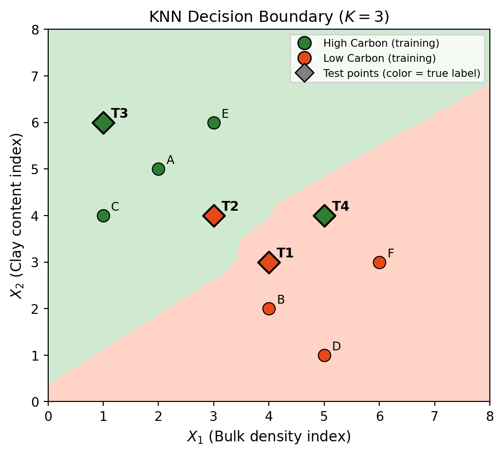

Midterm Exam Study Guide
Day-of instructions
- The midterm will take place in our usual classroom during class time.
- This is a closed-book, individual exam.
- No electronics are allowed.
- You can bring a 3x5 notecard with study notes on both sides
- You will be provided a calculator for any small computations you may need to do.
General Concepts
Being able to abstract from a data scenario
- 1.1 What are the predictors: \(X_1, \ldots, X_p\)
- 1.2 What is the response variable: \(Y\)
- 1.3 Observation data points for one and multiple predictors: \((x_1, y_1), \ldots, (x_p, y_p)\)
- 1.4 Whether inference or prediction is the main goal
- 1.5 Whether the problem is a regression or classification task
Provide examples for parametric and non-parametric methods and potential advantages and drawbacks.
Identify which accuracy metrics are appropriate to use in classification and regression applications for a given scenario.
For the regression accuracy metrics MSE, \(R^2\), adjusted \(R^2\), being able to:
- 4.1 Explain what each metric is measuring
- 4.2 Explain how a set of observed data points \((x_i, y_i)\) and their predicted values \(\hat{y}_i = \hat{f}(x_i)\) fit into the formulas
Being able to identify false positives/negatives and true positives/negatives given classification results in visual and tabular formats and create confusion matrices.
For the classification accuracy metrics error rate, accuracy, precision, recall, TPR, FPR; being able to:
- 6.1 Define each metric in terms of TP, FP, TN, and FN
- 6.2 Calculate metrics given confusion matrices
- 6.3 Explain how \(F_1\) is computed from precision and recall and how to interpret it
- 6.4 Discuss what metric might be more appropriate to prioritize in specific applied scenarios
Discuss how precision and recall change as a classifier correctly predicts more or less true positives.
Identify and discuss overfitting in classification and regression scenarios, particularly in relation to test and training errors.
Define model variance and bias, compare model results (plots) and discuss their relative bias and variance; explain the bias-variance tradeoff and the challenges it poses to minimizing the test error.
Explain what “data leakage” is and identify whether it is occurring in different scenarios.
Discuss how class imbalance may affect classification results.
Explain how the cross-validation process for estimating test error is implemented, and how it can be used to tune hyperparameters and select across different models.
Methods
13. Simple Linear Regression
- 13.1 In the model’s formula \(Y \approx \beta_0 + \beta_1 X\), being able to interpret the coefficients \(\beta_0\), \(\beta_1\) abstractly and in specific data scenarios
- 13.2 Generally explain the process via which the coefficients \(\hat{\beta}\) are estimated
- 13.3 Interpret standard errors and confidence intervals in plain language
- 13.4 Explain the hypothesis testing process and interpret p-values
- 13.5 Apply metrics, statistics, and results from a fitted model to solve inference and prediction questions
14. Multiple Linear Regression
- 14.1 In the model’s formula \(Y \approx \beta_0 + \beta_1 X_1 + \ldots + \beta_p X_p\), being able to interpret the coefficients \(\beta_0, \beta_1, \ldots, \beta_p\) abstractly and in specific data scenarios
- 14.2 Generally explain the process via which the coefficients \(\hat{\beta}\) are estimated
- 14.3 For \(p\) predictors and one response variable, discuss the difference between fitting \(p\) separate simple linear regressions
- 14.4 Explain the hypothesis testing process and interpret p-values
- 14.5 Apply metrics, statistics, and results from a fitted model to solve inference and prediction questions
15. K-Nearest Neighbors Classifier
- 15.1 Explain the procedure used to get a classification using KNN
- 15.2 Relate the K hyperparameter to variance, bias, and potential overfitting
16. Logistic Regression
- 16.1 Explain how the process of using a logistic regression model to perform binary classification tasks (modeling \(p(X)\) with the logistic function using the training data to fit it using maximum likelihood estimation; once the model \(p(X)\) has been fitted, select a classification threshold)
- 16.2 Interpret how the sign of the coefficients relates to the probability of belonging to the positive class
- 16.3 Explain the hypothesis testing process and interpret p-values
- 16.4 Apply metrics, statistics, and results from a fitted model to solve inference and prediction questions
- 16.5 Understand how an ROC curve is constructed and rank models according to their ROC curves and AUCs
Practice Scenarios
Please read
- These are examples for the kind of questions the exam will have and the format of the exam, not necessarily these exact topics.
- The exam will have two scenarios (10 questions each) in which you are requested to interpret results and discuss statements.
- The exam will cover all models discussed in the course, including but not limited to those in these practice exercises.”
✅ Solutions to practice exercises
The answers presented are quite comprehensive, so they can help you study and clarify any misconceptions.
Practice 1 — Salmon Survival Study
A team is studying the relationship between ocean conditions and juvenile salmon survival in a coastal estuary. They collect data from 45 monitoring sites and are interested in understanding whether ocean temperature can predict how many juvenile salmon survive. The following variables are recorded at each site:
- Sea surface temperature (SST): water temperature (°C) at each monitoring site
- Juvenile salmon survival rate: percentage (%) of juvenile salmon that survived to a given life stage at each site
Q1. What is the predictor variable in this study? What is the response variable?
Q2. Is this a regression or a classification problem? Justify your answer in one sentence.
Q3. Is this a supervised or unsupervised learning task? Justify your answer.
Before fitting a model, the team is planning to use the following workflow:
- Collect all 45 observations and split into a training set (80%) and a test set (20%).
- Fit three candidate models on the training set: simple linear regression with SST, simple linear regression with log(SST), and a polynomial regression.
- Evaluate all three models on the test set and choose the one with the lowest test MSE.
- Report the test MSE of the chosen model as its performance estimate.
Q4. Identify the problem in this workflow. How can it be corrected?
The team fits a simple linear regression model on the training set:
\[\widehat{\text{survival rate}} = \hat{\beta}_0 + \hat{\beta}_1 \times \text{SST}\]
The model output and summary statistics are shown below.
| Estimate | Std. Error | \(t\)-statistic | \(p\)-value | |
|---|---|---|---|---|
| Intercept (\(\hat{\beta}_0\)) | 82.4 | 6.3 | 13.08 | < 0.001 |
| SST (\(\hat{\beta}_1\)) | −3.1 | 0.8 | −3.88 | < 0.001 |
- 95% confidence interval for \(\hat{\beta}_1\): \([-4.7,\ -1.5]\)
- \(R^2 = 0.25\)
Q5. Interpret the slope coefficient \(\hat{\beta}_1 = -3.1\) in the context of this study.
Q6. Use the \(p\)-value to draw a conclusion about whether SST is a statistically significant predictor of survival rate.
Q7. One team member states:
“An \(R^2\) of 0.25 means the model is incorrect 75% of the time.”
Is this statement true or false? Explain your reasoning.
Q8. Another team member suggests:
“Let’s calculate the AUC to get a metric on the model’s performance.”
Is AUC an appropriate metric here? Explain.
The team expands their model to include two additional predictors: salinity (parts per thousand) and river discharge (m³/s):
\[\widehat{\text{survival rate}} = \hat{\beta}_0 + \hat{\beta}_1 \times \text{SST} + \hat{\beta}_2 \times \text{salinity} + \hat{\beta}_3 \times \text{discharge}\]
Q9. Interpret what the coefficient for salinity represents in this multiple regression model.
The expanded model produces the following results:
| Estimate | Std. Error | \(t\)-statistic | \(p\)-value | |
|---|---|---|---|---|
| Intercept | 78.1 | 7.2 | 10.85 | < 0.001 |
| SST | −2.8 | 0.9 | −3.11 | 0.003 |
| Salinity | 0.4 | 0.6 | 0.67 | 0.510 |
| Discharge | 1.2 | 0.3 | 4.00 | < 0.001 |
Q10. Based on the p-value for salinity, what conclusion do you draw about its relationship with survival rate? Explain.
Practice 2 — Soil Carbon Classification
A team of soil scientists is building a classifier to label soil samples according to carbon status. The samples are labeled as High Carbon or Low Carbon based on two soil measurements:
- Bulk density index (\(X_1\)): normalized bulk density of the soil sample, on a 0–10 scale
- Clay content index (\(X_2\)): normalized clay content of the soil sample, on a 0–10 scale
The team will be using High Carbon as the positive class.
Soil samples flagged as High Carbon will be published in a public database and used to certify land for carbon credit markets. Incorrectly certifying a Low Carbon site as High Carbon would undermine the program’s credibility and have financial consequences.
Q1. Which metric should the team prioritize recall or precision? Explain why.
The team applies their KNN classifier (\(K = 3\)) to a test set of 37 soil samples.
The figure below shows the KNN decision boundary (\(K = 3\)) fitted on the training data . Four test points (T1, T2, T3, T4) have been plotted. Their true labels are shown in the table.
Q2. Explain to the team what a false positive is in the context of this problem and identify one from the test points in the plot.
| Test Point | True Label |
|---|---|
| T1 | Low Carbon |
| T2 | Low Carbon |
| T3 | High Carbon |
| T4 | High Carbon |
The confusion matrix below shows the results.
| Predicted: High | Predicted: Low | |
|---|---|---|
| Actual: High | 9 | 3 |
| Actual: Low | 5 | 20 |
Q3. Calculate the False Positive Rate (FPR). Explain in plain language what this value means. Use the class names, not “positive” and “negative.”
Q4. The team considers using \(K = 1\) versus \(K = 9\). Which value of \(K\) is more likely to overfit the training data? Explain using the concepts of model flexibility, bias, and variance.
Instead of KNN, the team decides to fit a logistic regression model to predict carbon status.
Q5. Once the logistic regression model is fitted, what additional decision must the team make before it can output class labels? What are the tradeoffs of setting this value too high or too low in the context of the carbon certification program?
Q6. The coefficient for bulk density index (\(X_1\)) is \(-0.9\). A teammate says:
“This means sites with higher bulk density are less likely to be classified as High Carbon, given all else is held fixed.”
Are they correct? Explain.
Q7. Someone else suggests:
“When we apply \(k\)-fold cross-validation to evaluate a single model, we end up with \(k\) different intermediate trained models. We need to choose one of these to actually use to get the final predictions.”
Is this statement true or false? Explain.